Skin for a Search and Rescue Robot
It can feel too.
Background
This research was conducted at the Terradynamics Laboratory (a lab within the Laboratory for Computational Sensing and Robotics), which studies animal locomotion—like cockroaches, snakes, and lizards—to create robots that can navigate complex terrains. My P.I. was Dr. Chen Li.
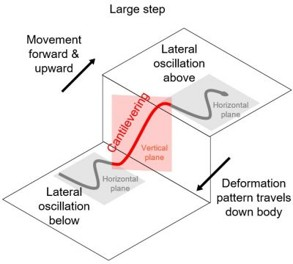
The robot could only sense obstacles directly in front of its "head." It had no way of knowing if its body was getting stuck, caught, or pressing too hard against an object. This lack of sensory feedback from the body meant the robot was at constant risk of failure in real-world scenarios.
Understanding the Problem
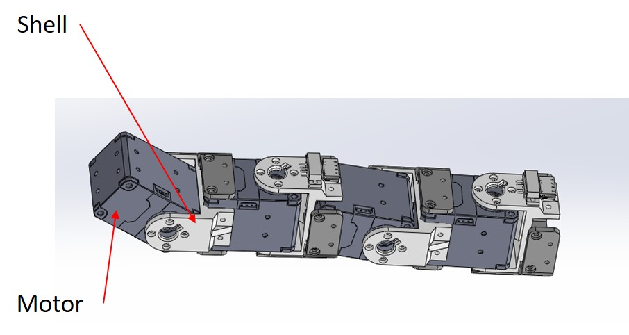
The requirements were challenging. The skin needed to be:
- Flexible & Extensible: It couldn't hinder the robot's movement.
- Robust: It had to survive sliding over concrete and rubble.
- Low Cost: We needed to cover a lot of surface area, plus we didn't have a lot of money.
- Multi-point Sensing: It needed to distinguish between a single point of contact and a broad surface.
Choosing the right sensor
I considered a few different options for the sensing element:
| Sensor Type | Cost | Complexity | Robustness | Verdict |
|---|---|---|---|---|
| Commercial (Tekscan) | High (>$3000) | Low | Low | Too expensive/fragile |
| Capacitive | Low | High | Medium | Complex fabrication |
| Piezoresistive | Low | Low | High | Cheap and simple to make |
To keep costs low (under $5 per sensor), I chose a piezoresistive sensing approach using a material called Velostat (made by 3M). Velostat decreases in electrical resistance when pressure is applied.
Sensor Design
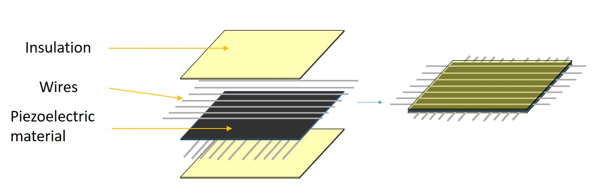
I created a grid by layering:
- A layer of insulation
- A bottom layer of parallel conductive threads.
- A middle layer of Velostat.
- A top layer of perpendicular conductive threads.
- Another layer of insulation
The sensing units (the region where the threads cross) had to be separated at a minimum 3.5mm, I chose to have about 7mm of separation because we didn't need that high of resolution. Measuring the resistance at the intersection of any row and column gave me the force at that specific point.
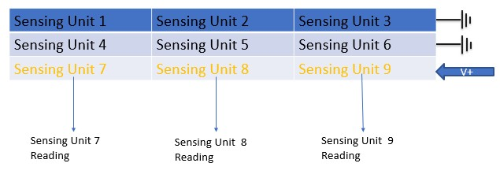
Using a multiplexer and a demultiplexer, you can read each sensing unit resistance. All that you would need to do is to apply a voltage to a given row while grounding the other rows. Then you can go down the columns and read the resistance at each intersection. This resistance is directly proportional to the pressure applied to that point.
Proposed assembly onto the robot:
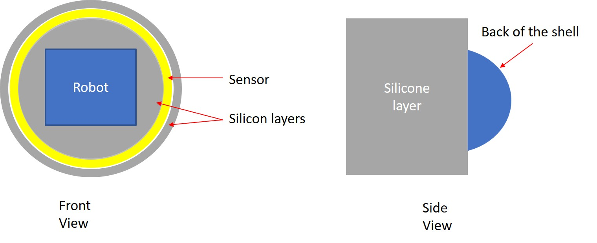
This entire sensor assembly was then encased in Ecoflex 00-40, a platinum-cure silicone rubber. This protected the sensor from the elements and provided a grippy surface for the robot to gain traction. Also, since it is very cheap to make, it can easily be replace after it wears down.
The Fabrication Struggle
Designing the sensor was one thing; building it consistently was another. The wires had to be perfectly straight and spaced to effectively create a grid. Conductive threads are great because they are very bendy and won't snap like regular wire but they are extremely hard to keep stable.
Attempt 1 & 2: The "Wire Apparatus"
My first attempts involved 3D printing frames to hold the wires tensioned. It... didn't go well.
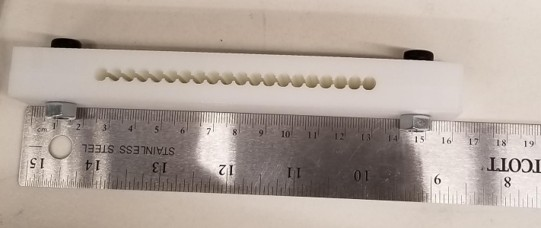
Version 1: the wires could not stay in place because there were such big gaps.
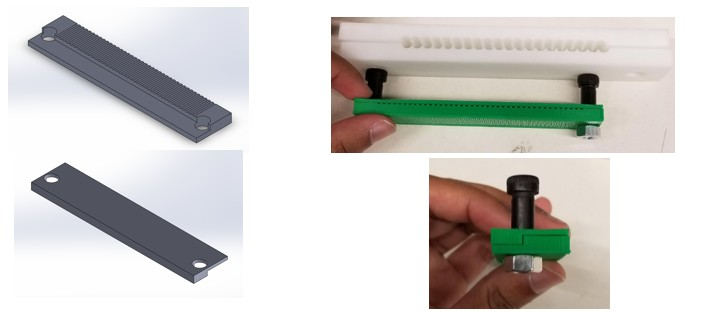
Version 2: The gaps were gone but putting in wires one at a time was very tedious
The wires would bunch up, move, or touch each other. It took nearly 45 minutes to make just one bad sensor grid.
The Breakthrough: The Pinboard
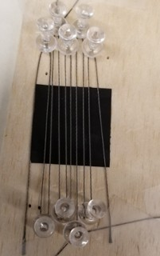
This allowed me to wrap the wire back and forth around pins to create a perfect parallel array in seconds. I could then deposit the silicone, place the Velostat, rotate the jig 90 degrees, and do the second layer.
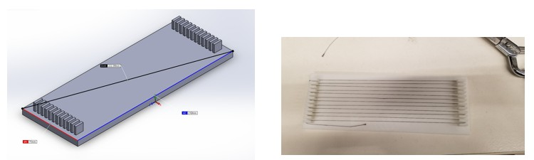
Version 3: The new pinboard jig allowed for quick and accurate wire routing.
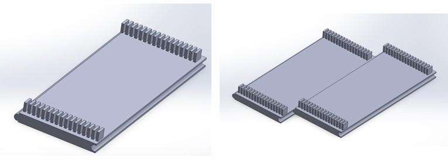
Version 3.5: I made a way to extend the pinboard to make bigger sensors.
Final Assembly Process
With the new process, production became reliable and fast.
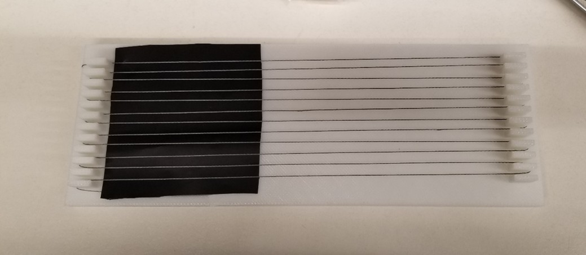
Step 1: Winding the First Layer
Using the custom pinboard jig, conductive wire is wrapped back and forth to create the bottom electrode grid. The pins ensure perfect spacing and tension.
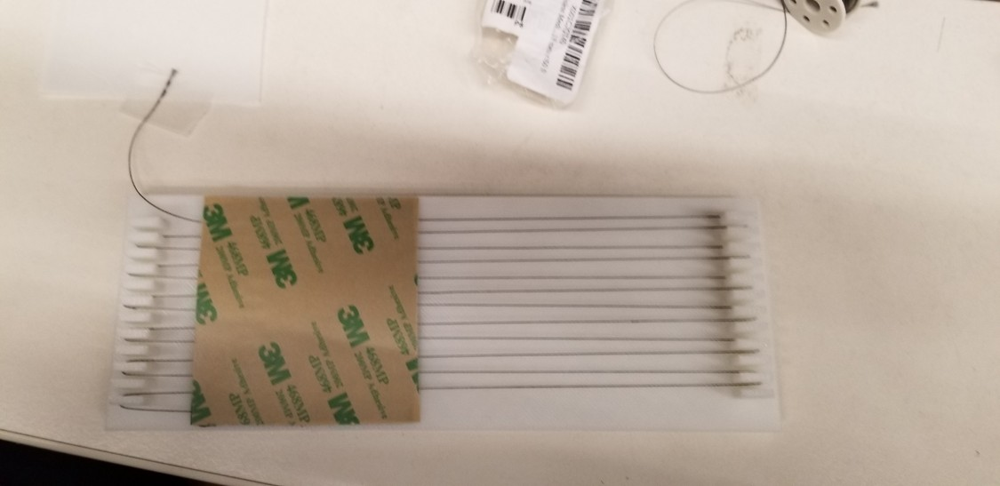
Step 2: Securing the Base
A thin layer of silicone adhesive is applied to smooth out the wires and create a stable base layer for the sensor material.
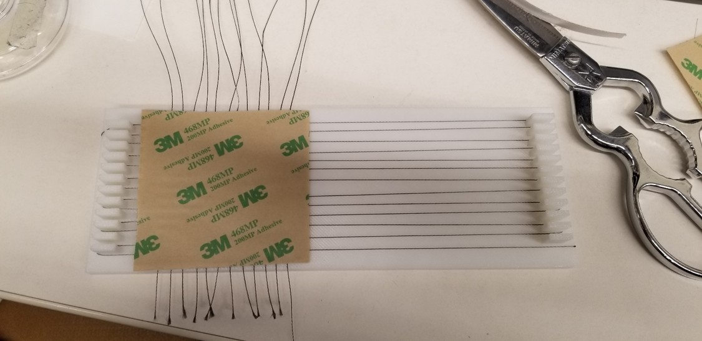
Step 3: Adding the Sensor Core
The Velostat piezoresistive sheet—the "meat" of the sandwich—is placed carefully on top of the cured bottom layer.
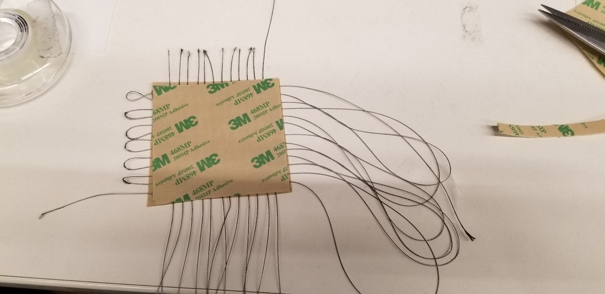
Step 4: Cross-Hatching
The jig is rotated 90 degrees. The top layer of wires is wound perpendicular to the first layer to create the intersecting grid points.
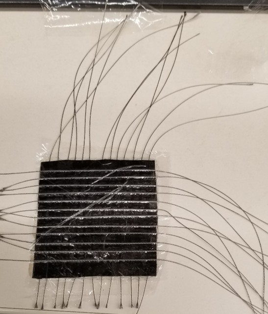
Step 5: Encapsulation
The entire assembly is then covered with saran wrap. This encapsulates the wires, protecting them from damage and also allowing for me to see where the sensing units are.
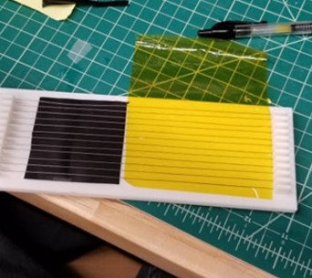
Step 6: Final Trimming
Once finished, and the wires were wrapped with an insulating tape to prevent the wires from interfering with each other and then the loops were cut.
Integration & Results
The final sensors were integrated into the robot's 3D printed shell. I used an Arduino Mega to read the sensor grid and send the data to a PC for visualization.
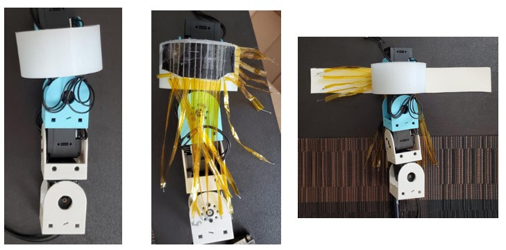
The skin integrated seamlessly onto the robot segments.
Data Visualization
I developed a MATLAB interface to visualize the pressure data as a real-time heatmap. This allowed me to "see" what the robot was feeling. It would output the voltages as a heatmap for easier viewing.
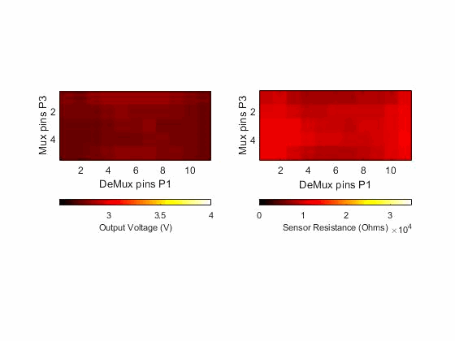

Force Calculations
To further characterize the sensor, I calcualted the max forces that the sensor could withstand before it stopped acting linearly.
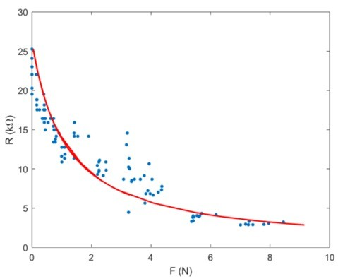
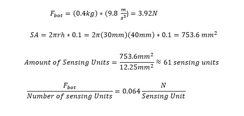
I saw that the linear region of the sensor was between 0-1N per sensing unit. We were concerned that the weight of the robot would overload the regions of the sensor that it was laying on. The sensing units (the region where two wires overlapped) had a minimum sensing area of 12.25mm^2 each, so assuming that 10% of the robot was touching the ground at any given point, I calculated that we would be well within the linear region of the sensor.
Conclusion
The final design met all my success criteria: it was robust, sensitive enough to detect obstacles, and cost less than $5 per unit to produce. Unfortunately, the pandemic hit, the lab was closed for awhile, and I graduated so I never got to fully see my work tested on the robot. I was glad to have it integrated and be ready for testing as I was saying my goodbyes.

A fully built robot with the skin attached.